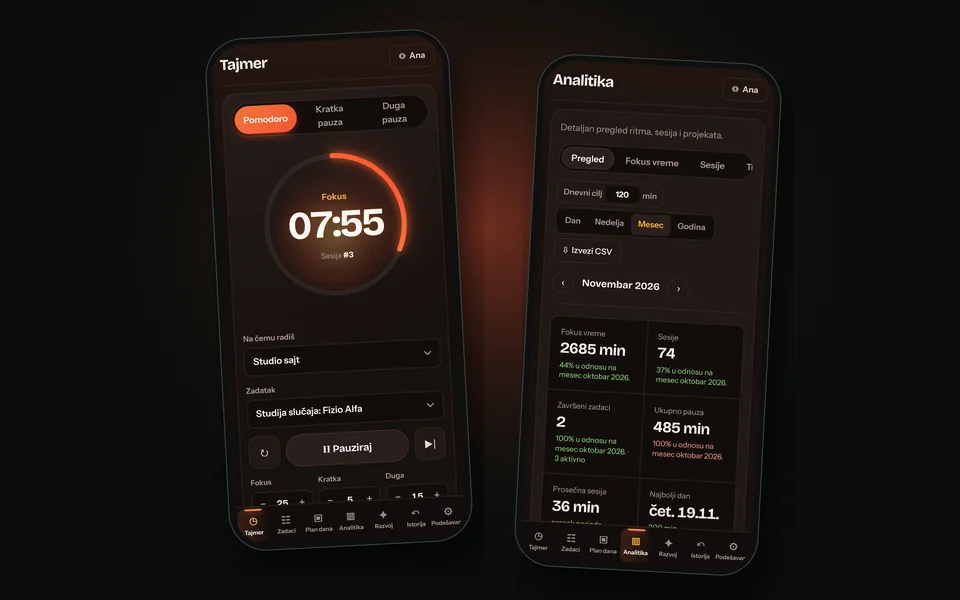

Concentración que
no pierde el objetivo.
- Problema
- El temporizador en una app, las tareas en otra, las notas en una tercera. No se veía a dónde iba el tiempo.
- Solución
- Un temporizador vinculado al proyecto y la tarea, plan del día, estadísticas por día, semana y mes, y niveles que crecen con el tiempo invertido.
- Parte técnica
- El mismo temporizador en ordenador y móvil, una ventana pequeña sobre otras apps, una paleta de comandos y uso completo con teclado.
- Tecnología
- Django, PostgreSQL, Docker; servidor privado.



¿Necesitas una herramienta que siga tu forma de trabajar?
Escríbeme